คู่มือการใช้งาน Advance File Search
1 คำนำ วัตถุประสงค์ และประโยชน์ของโปรแกรม
1.1 คำนำ
ในการปฏิบัติงานประจำวัน หน่วยงานย่อมมีเอกสารสะสมเป็นจำนวนมาก ผู้ปฏิบัติงานจึงมักประสบปัญหาว่าจำได้เพียงข้อความบางส่วนที่ปรากฏอยู่ภายในเอกสาร แต่ไม่อาจระบุได้ว่าข้อความดังกล่าวอยู่ในแฟ้มใด การค้นหาด้วยชื่อแฟ้มเพียงอย่างเดียวจึงไม่เพียงพอต่อการปฏิบัติงานจริง
Advance File Search พัฒนาขึ้นเพื่อแก้ไขปัญหาดังกล่าวโดยเฉพาะ โปรแกรมจะอ่านข้อความที่อยู่ภายในเอกสารประเภท PDF, Microsoft Word, Microsoft Excel และแฟ้มข้อความ แล้วจัดทำ “ดัชนีค้นหา” เก็บไว้ในเครื่องคอมพิวเตอร์ของผู้ใช้ ผู้ใช้จึงสามารถค้นหาคำหรือข้อความที่ปรากฏอยู่ภายในเอกสารได้อย่างรวดเร็ว พร้อมทั้งทราบตำแหน่งที่พบว่าอยู่ที่หน้าใด ย่อหน้าใด เซลล์ใด หรือบรรทัดที่เท่าใด
ประการสำคัญที่แตกต่างจากบริการค้นหาทั่วไป คือ ข้อมูลทั้งหมดคงอยู่ภายในเครื่องคอมพิวเตอร์ของผู้ใช้เท่านั้น ทั้งตัวเอกสาร ข้อความที่สกัดออกมา ดัชนีค้นหา และคำค้นของผู้ใช้ ไม่มีการส่งออกไปยังระบบภายนอกไม่ว่ากรณีใด จึงเหมาะสมกับเอกสารราชการ เอกสารภายในองค์กร และเอกสารส่วนบุคคลซึ่งไม่สมควรนำขึ้นสู่ระบบคลาวด์
1.2 วัตถุประสงค์
- เพื่อให้ผู้ใช้ค้นหาเอกสารจาก เนื้อหาภายในเอกสาร มิใช่เพียงชื่อแฟ้ม
- เพื่อให้การค้นหาภาษาไทยได้ผลถูกต้องครบถ้วน แม้ข้อความนั้นไม่มีการเว้นวรรคระหว่างคำ
- เพื่อให้ผู้ใช้ทราบตำแหน่งที่พบข้อความภายในเอกสารได้อย่างเจาะจง
- เพื่อรักษาความลับของเอกสาร โดยไม่มีการเชื่อมต่อออกสู่ภายนอกในทุกกรณี
1.3 ประโยชน์ที่ได้รับ
ลดระยะเวลาในการสืบค้นเอกสาร
เมื่อจัดทำดัชนีแล้ว การค้นหาในเอกสารหลักพันแฟ้มใช้เวลาไม่ถึงหนึ่งวินาที ผู้ใช้จึงไม่ต้องเปิดเอกสารทีละแฟ้มเพื่อตรวจสอบด้วยตนเอง
รักษาความลับของข้อมูล
เอกสารไม่ถูกอัปโหลดไปยังบริการภายนอก ไม่มีการเก็บสถิติการใช้งาน และโปรแกรมยังทำงานได้ตามปกติแม้ถอดสายเครือข่ายออกทั้งหมด
ลดความซ้ำซ้อนของการจัดทำเอกสาร
ผู้ใช้ตรวจสอบได้ทันทีว่าเคยจัดทำเอกสารเรื่องเดียวกันไว้แล้วหรือไม่ จึงลดการจัดทำเอกสารซ้ำโดยไม่จำเป็น
ใช้งานได้ทันทีโดยไม่ต้องติดตั้งระบบเพิ่ม
ไม่ต้องติดตั้งฐานข้อมูล ไม่ต้องมีเครื่องแม่ข่าย และไม่ต้องขอสิทธิ์ผู้ดูแลระบบ เพียงคัดลอกโฟลเดอร์โปรแกรมไปยังเครื่องที่ต้องการใช้งาน
1.4 แนวทางการนำโปรแกรมไปใช้
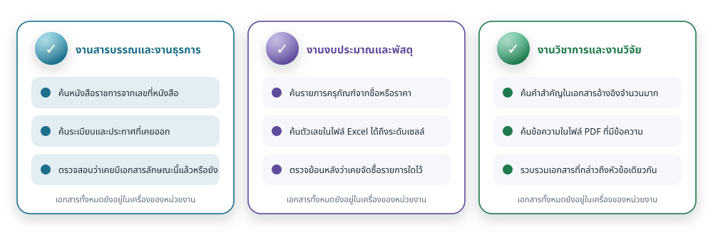
โปรแกรมนี้เหมาะสำหรับงานที่มีเอกสารสะสมจำนวนมากและต้องการสืบค้นย้อนหลังอยู่เสมอ ตัวอย่างเช่น งานสารบรรณและงานธุรการ งานงบประมาณและพัสดุ งานวิชาการและงานวิจัย ตลอดจนการรวบรวมเอกสารประกอบการตรวจสอบภายใน ทั้งนี้ ผู้ใช้ควรจัดเก็บเอกสารไว้ในโฟลเดอร์ที่มีโครงสร้างชัดเจน เพื่อให้กำหนดขอบเขตการจัดทำดัชนีได้อย่างเหมาะสม
1.5 หลักการทำงานโดยสังเขป
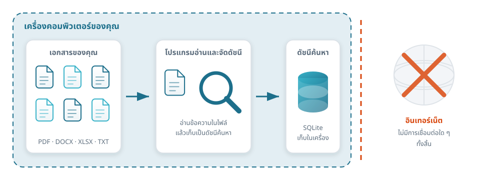
โปรแกรมอ่านข้อความจากเอกสารในโฟลเดอร์ที่ผู้ใช้กำหนด แล้วจัดเก็บข้อความดังกล่าวพร้อมตำแหน่งไว้ในฐานข้อมูล SQLite ภายในเครื่อง เมื่อผู้ใช้สั่งค้นหา โปรแกรมจะค้นจากดัชนีที่จัดทำไว้ จึงได้ผลลัพธ์อย่างรวดเร็ว โดยไม่ต้องเปิดอ่านเอกสารทุกแฟ้มซ้ำอีก
2 ความต้องการของระบบ
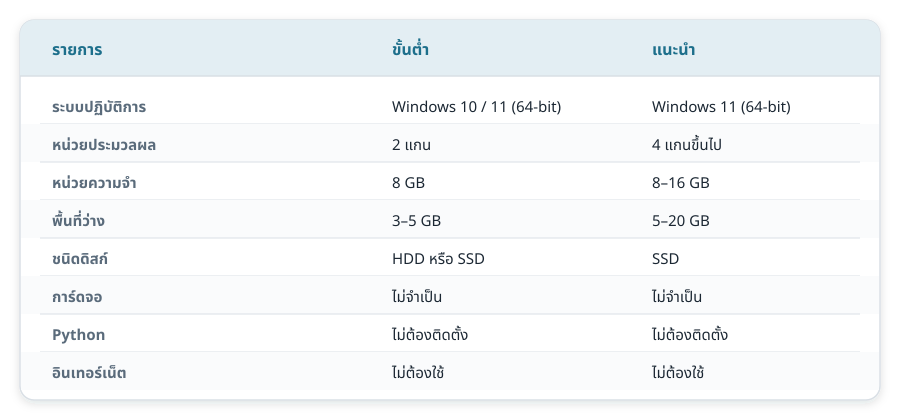
2.1 สภาพแวดล้อมของระบบ
| รายการ | ขั้นต่ำ | ที่แนะนำ |
|---|---|---|
| ระบบปฏิบัติการ | Windows 10 รุ่น 64 บิต (รุ่น 1809 ขึ้นไป) | Windows 11 รุ่น 64 บิต |
| หน่วยประมวลผล | 2 แกน ความเร็ว 1.6 กิกะเฮิรตซ์ | 4 แกนขึ้นไป |
| หน่วยความจำหลัก | 4 กิกะไบต์ | 8 กิกะไบต์ขึ้นไป |
| พื้นที่ว่างในหน่วยเก็บข้อมูล | 500 เมกะไบต์ สำหรับตัวโปรแกรม และพื้นที่สำหรับดัชนี | 1 กิกะไบต์ขึ้นไป และควรเป็นหน่วยเก็บข้อมูลแบบ SSD |
| ความละเอียดของจอภาพ | 1366 × 768 จุด | 1920 × 1080 จุดขึ้นไป |
| สิทธิ์ของผู้ใช้ | ผู้ใช้ทั่วไป ไม่ต้องเป็นผู้ดูแลระบบ | เช่นเดียวกัน |
| การเชื่อมต่ออินเทอร์เน็ต | ไม่จำเป็นต้องใช้ | ไม่จำเป็นต้องใช้ |
2.2 โปรแกรมอื่นที่ต้องติดตั้งก่อน
อย่างไรก็ดี หากผู้ใช้ประสงค์จะ เปิดเอกสาร ที่ค้นพบ เครื่องคอมพิวเตอร์ต้องมีโปรแกรมสำหรับเปิดเอกสารประเภทนั้นอยู่แล้ว เช่น โปรแกรมอ่าน PDF หรือ Microsoft Word เนื่องจากโปรแกรมนี้ทำหน้าที่ส่งคำสั่งเปิดแฟ้มไปยังระบบปฏิบัติการเท่านั้น มิได้เปิดเอกสารขึ้นแสดงด้วยตนเอง
2.3 ระบบปฏิบัติการอื่น
2.4 ปริมาณงานที่รองรับ
| รายการ | ค่าที่ออกแบบไว้ | ผลการทดสอบจริง |
|---|---|---|
| จำนวนแฟ้มต่อหนึ่งโฟลเดอร์ที่จัดทำดัชนี | 2,000–3,000 แฟ้ม | ทดสอบที่ 1,000 แฟ้ม ใช้เวลาจัดทำดัชนี 2.95 วินาที |
| ระยะเวลาการค้นหา | ไม่เกินประมาณ 1 วินาที | น้อยกว่า 10 มิลลิวินาที |
| ขนาดแฟ้มสูงสุดที่อ่าน | 500 เมกะไบต์ต่อแฟ้ม | ปรับได้สูงสุด 4 กิกะไบต์ |
| จำนวนผลลัพธ์ต่อการค้นหาหนึ่งครั้ง | 200 แฟ้ม | ปรับได้สูงสุด 5,000 แฟ้ม |
3 การติดตั้งและการเปิดโปรแกรม
โปรแกรมนี้เป็นชุดโปรแกรมแบบพร้อมใช้ (portable) ไม่มีตัวติดตั้งและไม่เขียนค่าลงรีจิสทรี ผู้ใช้เพียงคัดลอกโฟลเดอร์โปรแกรมไปยังเครื่องที่ต้องการ แล้วเรียกใช้งานได้ทันที
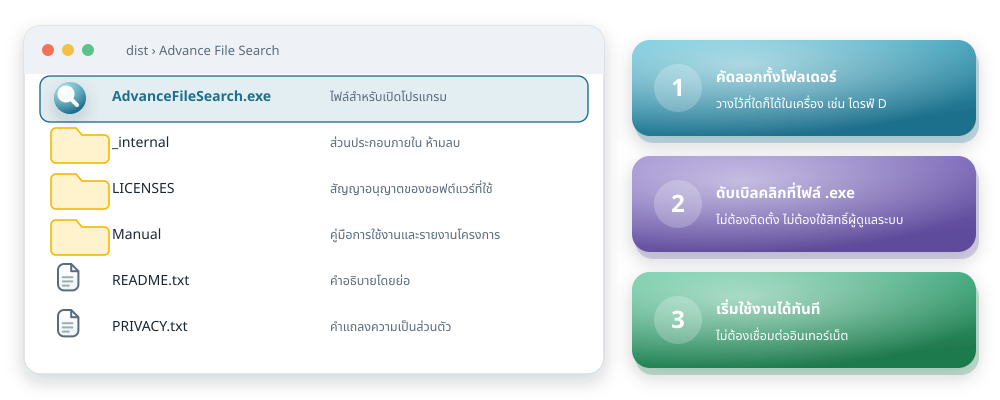
3.1 ส่วนประกอบภายในโฟลเดอร์โปรแกรม
| ชื่อ | ประเภท | หน้าที่ |
|---|---|---|
AdvanceFileSearch.exe | แฟ้มโปรแกรม | แฟ้มสำหรับเปิดโปรแกรม ให้ดับเบิลคลิกที่แฟ้มนี้ |
_internal | โฟลเดอร์ | ส่วนประกอบภายในของโปรแกรม ห้ามลบหรือแก้ไข |
Manual | โฟลเดอร์ | คู่มือการใช้งานฉบับนี้ และรายงานสรุปโครงการ |
LICENSES | โฟลเดอร์ | สัญญาอนุญาตของซอฟต์แวร์ที่นำมาใช้ประกอบ |
README.txt | แฟ้มข้อความ | คำอธิบายโดยย่อของชุดโปรแกรม |
PRIVACY.txt | แฟ้มข้อความ | คำแถลงเกี่ยวกับความเป็นส่วนตัวของข้อมูล |
3.2 ขั้นตอนการติดตั้ง
- คัดลอกโฟลเดอร์โปรแกรม
คัดลอกโฟลเดอร์
Advance File Searchทั้งโฟลเดอร์ไปยังตำแหน่งที่ต้องการ เช่นD:\Programs\Advance File Searchไม่ควรวางไว้ในโฟลเดอร์ที่ต้องใช้สิทธิ์ผู้ดูแลระบบในการเขียน - ดับเบิลคลิกแฟ้ม AdvanceFileSearch.exe โปรแกรมจะเปิดขึ้นภายในไม่กี่วินาที โดยไม่ปรากฏหน้าต่างบรรทัดคำสั่ง หากระบบป้องกันของ Windows แจ้งเตือนเนื่องจากเป็นโปรแกรมที่ไม่ได้ลงลายมือชื่อดิจิทัล ให้เลือก “ข้อมูลเพิ่มเติม” แล้วเลือก “เรียกใช้ต่อไป”
- ตรวจสอบสัญลักษณ์ของโปรแกรม เมื่อเปิดสำเร็จ จะปรากฏสัญลักษณ์รูปแว่นขยายบนเอกสารที่แถบชื่อเรื่องและแถบงาน ซึ่งใช้ยืนยันได้ว่าเป็นโปรแกรมที่ถูกต้อง
3.3 หน้าจอเมื่อเปิดโปรแกรมครั้งแรก
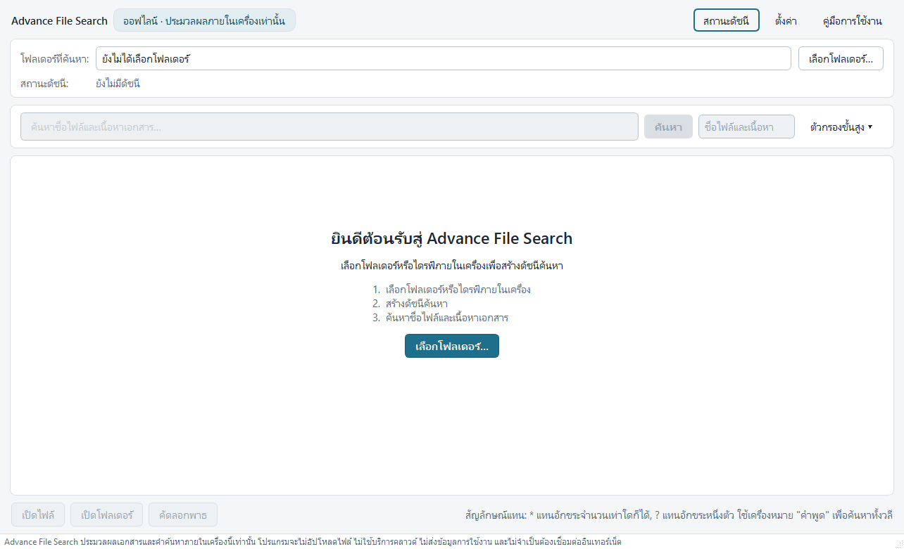
ในการเปิดใช้งานครั้งแรก ช่องค้นหาจะยังไม่เปิดให้ใช้งาน เนื่องจากโปรแกรมยังไม่ทราบว่าผู้ใช้ประสงค์จะค้นหาภายในโฟลเดอร์ใด ให้เลือกปุ่ม เลือกโฟลเดอร์… ที่กึ่งกลางหน้าจอเพื่อกำหนดขอบเขตการค้นหาก่อน
%LOCALAPPDATA%\Advance File Search\
ซึ่งเป็นพื้นที่ของผู้ใช้แต่ละราย มิได้เก็บไว้ในโฟลเดอร์โปรแกรม
ดังนั้นการลบโฟลเดอร์โปรแกรมจึงไม่ทำให้ดัชนีหายไป
และผู้ใช้แต่ละรายบนเครื่องเดียวกันจะมีดัชนีแยกจากกัน
3.4 การถอนการติดตั้ง
ให้ลบโฟลเดอร์โปรแกรมทิ้ง และหากประสงค์จะลบข้อมูลที่โปรแกรมสร้างขึ้นด้วย
ให้ลบโฟลเดอร์ %LOCALAPPDATA%\Advance File Search\
ซึ่งเข้าถึงได้โดยสะดวกจากเมนู สถานะดัชนี → เปิดโฟลเดอร์ข้อมูลโปรแกรม
การลบข้อมูลดังกล่าวไม่กระทบต่อเอกสารต้นฉบับของผู้ใช้แต่อย่างใด
4 ส่วนประกอบของหน้าจอหลัก
หน้าจอหลักประกอบด้วยส่วนสำคัญสี่ส่วน เรียงจากบนลงล่างตามลำดับการใช้งาน เพื่อความชัดเจนในการอธิบาย คู่มือฉบับนี้แยกอธิบายทีละส่วน โดยแต่ละส่วนมีภาพประกอบและหมายเลขกำกับของตนเอง
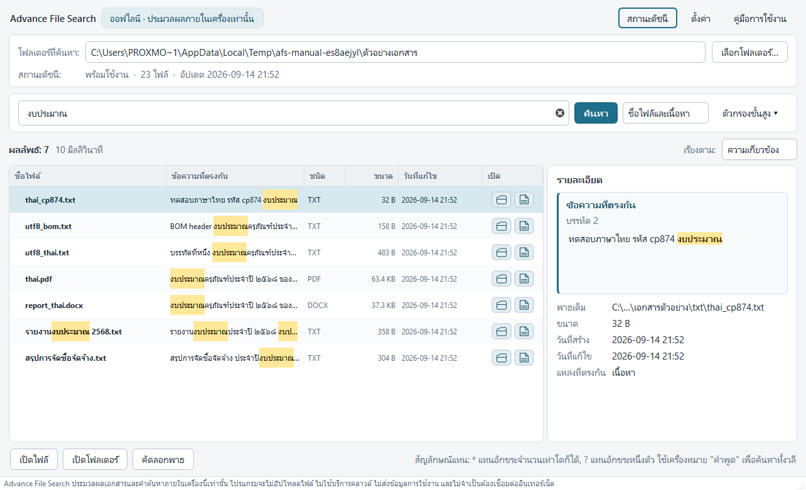
ส่วนที่ 1 — แถบด้านบน
สำหรับเลือกโฟลเดอร์ ตรวจสอบสถานะดัชนี และเข้าถึงเมนูต่าง ๆ (หัวข้อ 4.1)
ส่วนที่ 2 — แถบค้นหา
สำหรับพิมพ์คำค้น กำหนดขอบเขต และเรียงลำดับผลลัพธ์ (หัวข้อ 4.2)
ส่วนที่ 3 — ผลลัพธ์และรายละเอียด
แสดงรายการแฟ้มที่พบ ข้อความที่ตรงกัน และข้อมูลของแฟ้ม (หัวข้อ 4.3)
ส่วนที่ 4 — แถบคำสั่งด้านล่าง
สำหรับเปิดแฟ้ม เปิดโฟลเดอร์ และคัดลอกเส้นทางแฟ้ม (หัวข้อ 4.4)
4.1 ส่วนที่ 1 — แถบด้านบน
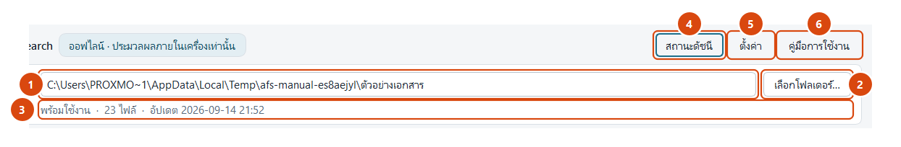
- ช่องแสดงโฟลเดอร์ที่ค้น แสดงโฟลเดอร์ที่กำลังใช้งานอยู่ และเก็บรายการโฟลเดอร์ที่เคยใช้ไว้ให้เลือกสลับได้ทันที การเปลี่ยนค่าที่ช่องนี้เท่ากับการเปลี่ยนขอบเขตการค้นหาทั้งหมด
- ปุ่มเลือกโฟลเดอร์… เปิดกล่องโต้ตอบของ Windows เพื่อเลือกโฟลเดอร์หรือไดรฟ์ภายในเครื่อง โปรแกรมจะปฏิเสธตำแหน่งที่อยู่บนเครือข่ายพร้อมแจ้งเหตุผล
- แถบแสดงสถานะดัชนี แจ้งว่าดัชนีพร้อมใช้งานหรือไม่ มีจำนวนกี่แฟ้ม และปรับปรุงล่าสุดเมื่อใด หากจำนวนแฟ้มไม่ตรงกับความเป็นจริง แสดงว่าถึงเวลาปรับปรุงดัชนี
- เมนูสถานะดัชนี รวมคำสั่งทั้งหมดที่เกี่ยวกับดัชนีไว้ในเมนูเดียว รายละเอียดอยู่ในหัวข้อ 5.2
- ปุ่มตั้งค่า เปิดกล่องตั้งค่าซึ่งแบ่งเป็นสามแท็บ รายละเอียดอยู่ในหัวข้อ 5.3
- ปุ่มคู่มือการใช้งาน เปิดคู่มือฉบับนี้ด้วยเว็บเบราว์เซอร์ที่ติดตั้งอยู่ในเครื่อง คู่มือเป็นแฟ้มในเครื่องทั้งหมด จึงเปิดอ่านได้แม้ไม่ได้เชื่อมต่ออินเทอร์เน็ต
4.2 ส่วนที่ 2 — แถบค้นหา
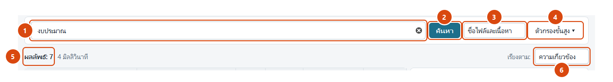
- ช่องคำค้น
พิมพ์คำหรือวลีที่ต้องการค้นหา ใช้เครื่องหมายอัญประกาศเพื่อค้นทั้งวลี
ใช้เครื่องหมาย
*แทนอักขระจำนวนเท่าใดก็ได้ และ?แทนอักขระหนึ่งตัว กดสัญลักษณ์กากบาทท้ายช่องเพื่อล้างคำค้น - ปุ่มค้นหา เริ่มการค้นหา หากยังไม่มีดัชนีของโฟลเดอร์นี้ โปรแกรมจะจัดทำดัชนีให้ก่อนโดยอัตโนมัติ แล้วจึงค้นหาต่อให้เอง หากมีดัชนีอยู่แล้วจะแสดงผลทันที พร้อมตรวจหาแฟ้มที่เปลี่ยนแปลงในเบื้องหลัง
- ขอบเขตการค้น กำหนดว่าจะค้นเฉพาะชื่อแฟ้ม เฉพาะเนื้อหา หรือทั้งสองอย่าง การค้นเฉพาะชื่อแฟ้มให้ผลเร็วที่สุด เนื่องจากใช้ดัชนีคนละชุดกับเนื้อหา
- ตัวกรองขั้นสูง พับเก็บไว้โดยปริยาย เมื่อเลือกจะกางแผงตัวเลือกเพิ่มเติม รายละเอียดอยู่ในหัวข้อ 5.4
- จำนวนผลลัพธ์และระยะเวลาที่ใช้ แจ้งจำนวนแฟ้มที่พบและระยะเวลาที่ใช้ค้นหาเป็นมิลลิวินาที หากผลลัพธ์ถูกจำกัดจำนวนไว้ จะมีข้อความแจ้งไว้ที่ตำแหน่งนี้เช่นกัน
- การเรียงลำดับผลลัพธ์ เลือกได้ระหว่าง ความเกี่ยวข้อง (ค่าโดยปริยาย) ชื่อแฟ้ม ขนาด วันที่แก้ไข วันที่สร้าง และชนิดของแฟ้ม
4.3 ส่วนที่ 3 — ตารางผลลัพธ์และแผงรายละเอียด
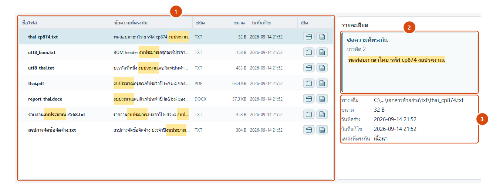
- ตารางผลลัพธ์ แสดงหนึ่งแถวต่อหนึ่งแฟ้ม เรียงตามเกณฑ์ที่เลือกไว้ เลือกแถวใดแถวหนึ่งเพื่อดูรายละเอียดทางด้านขวา และกดลูกศรหน้าแถวเพื่อกางดูทุกตำแหน่งที่พบภายในแฟ้มนั้น
- กล่องข้อความที่ตรงกัน แสดงข้อความจริงจากเอกสารบริเวณที่พบคำค้น ประมาณ 2–3 บรรทัด พร้อมแรเงาเน้นคำที่ตรงกัน และระบุตำแหน่งในเอกสารไว้ด้านบน ข้อความนี้แสดงเป็นข้อความล้วนเสมอ จึงปลอดภัยแม้เอกสารมีข้อความลักษณะเป็นรหัสคำสั่ง
- ข้อมูลของแฟ้ม แสดงเส้นทางเต็มของแฟ้ม ขนาด วันที่สร้าง วันที่แก้ไข และแหล่งที่ตรงกัน (ชื่อแฟ้ม เนื้อหา หรือทั้งสองอย่าง) เส้นทางที่ยาวจะถูกย่อที่ขอบโฟลเดอร์ และแสดงเต็มเมื่อนำตัวชี้ไปวางค้างไว้
คอลัมน์ทั้งหกของตารางผลลัพธ์
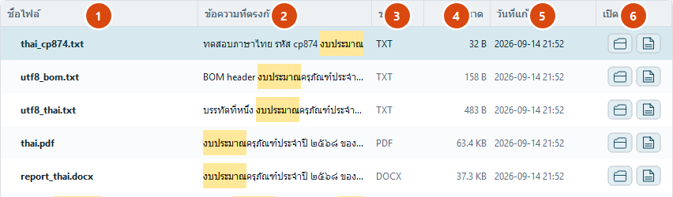
- ชื่อไฟล์ชื่อแฟ้มพร้อมแรเงาเน้นส่วนที่ตรงกับคำค้น แฟ้มที่ไม่พบแล้วจะแสดงด้วยเส้นขีดฆ่า
- ข้อความที่ตรงกันข้อความจากภายในเอกสารบริเวณที่พบคำค้น พร้อมแรเงาเน้น
- ชนิดชนิดของแฟ้มโดยย่อ เช่น PDF, DOCX, XLSX, TXT
- ขนาดขนาดของแฟ้มในหน่วยที่อ่านเข้าใจได้
- วันที่แก้ไขวันและเวลาที่แฟ้มถูกแก้ไขล่าสุดตามที่ระบบแฟ้มบันทึกไว้
- เปิดปุ่มสัญลักษณ์สองปุ่มประจำแถว ปุ่มซ้ายรูปโฟลเดอร์สำหรับเปิด File Explorer ไปยังโฟลเดอร์ที่เก็บแฟ้มนั้น ปุ่มขวารูปเอกสารสำหรับเปิดแฟ้มนั้นทันที (ดูหัวข้อ 6.5)
4.4 ส่วนที่ 4 — แถบคำสั่งด้านล่าง
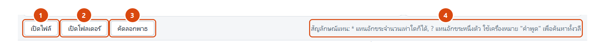
- ปุ่มเปิดไฟล์ เปิดเอกสารที่เลือกด้วยโปรแกรมที่ระบบกำหนดไว้สำหรับชนิดแฟ้มนั้น หากแฟ้มถูกย้ายหรือลบไปแล้ว ปุ่มนี้จะถูกปิดการใช้งานพร้อมแสดงคำเตือน
- ปุ่มเปิดโฟลเดอร์ เปิด File Explorer ไปยังโฟลเดอร์ที่เก็บแฟ้ม พร้อมเลือกแฟ้มนั้นไว้ให้
- ปุ่มคัดลอกพาธ คัดลอกเส้นทางเต็มของแฟ้มไปยังคลิปบอร์ด เพื่อนำไปวางในเอกสารหรือจดหมายอิเล็กทรอนิกส์
- คำอธิบายสัญลักษณ์แทน
ข้อความเตือนความจำเกี่ยวกับการใช้
*?และเครื่องหมายอัญประกาศ แสดงไว้ตลอดเวลาเพื่อให้ผู้ใช้ไม่ต้องเปิดคู่มือซ้ำ
5 หน้าจอย่อยและกล่องโต้ตอบ
5.1 กล่องแสดงความคืบหน้าการจัดทำดัชนี
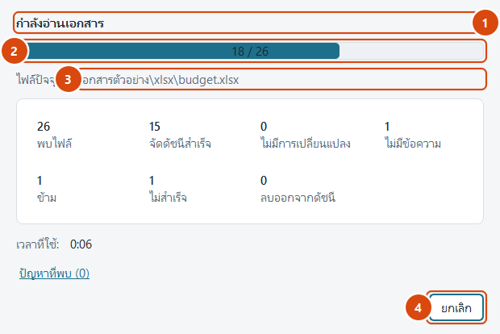
- ขั้นตอนที่กำลังดำเนินการ แจ้งว่าขณะนี้อยู่ระหว่างการสำรวจแฟ้ม การอ่านเอกสาร หรือการปิดงาน
- แถบความคืบหน้า แสดงสัดส่วนที่ดำเนินการแล้วเมื่อทราบจำนวนแฟ้มทั้งหมดแล้ว ก่อนหน้านั้นจะแสดงเป็นแถบเคลื่อนไหวโดยไม่ระบุสัดส่วน
- แฟ้มที่กำลังดำเนินการและตัวนับ แสดงจำนวนแฟ้มที่จัดทำดัชนีแล้ว ไม่มีการเปลี่ยนแปลง ถูกข้าม และไม่สำเร็จ
- ปุ่มยกเลิก หยุดการทำงานที่ขอบเขตของแฟ้มถัดไป ดัชนีส่วนที่ทำไปแล้วยังใช้งานได้ตามปกติ และไม่เกิดความเสียหายแก่ฐานข้อมูล
เมื่อดำเนินการเสร็จสิ้น หากมีแฟ้มที่อ่านไม่ได้ โปรแกรมจะแสดงรายการพร้อมเหตุผลที่เข้าใจได้ เช่น “แฟ้มถูกกำหนดรหัสผ่าน” “ไม่พบข้อความที่ค้นหาได้ อาจเป็น PDF จากการสแกน” หรือ “แฟ้มเสียหาย” ซึ่งถือเป็นผลลัพธ์ตามปกติ มิใช่ความผิดพลาดของโปรแกรม
5.2 เมนูสถานะดัชนี
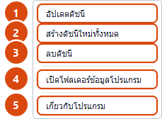
- อัปเดตดัชนี ตรวจหาแฟ้มที่เพิ่มขึ้น ถูกแก้ไข หรือถูกลบ แล้วปรับปรุงเฉพาะส่วนที่เปลี่ยนแปลง เป็นคำสั่งที่ใช้บ่อยที่สุดและใช้เวลาน้อยที่สุด โดยปกติผู้ใช้ไม่จำเป็นต้องสั่งเอง เนื่องจากการค้นหาจะดำเนินการให้อยู่แล้ว
- สร้างดัชนีใหม่ทั้งหมด อ่านเอกสารทุกแฟ้มใหม่ทั้งหมดโดยไม่พิจารณาลายนิ้วมือแฟ้ม ใช้เมื่อสงสัยว่าดัชนีไม่ตรงกับความเป็นจริง หรือเมื่อเปลี่ยนค่าตั้งที่มีผลต่อสิ่งที่ถูกอ่านเข้าดัชนี
- ลบดัชนี ลบเฉพาะดัชนีของโฟลเดอร์ที่เลือกไว้ ไม่กระทบต่อเอกสารต้นฉบับ และสร้างขึ้นใหม่ได้เสมอเมื่อต้องการ
- เปิดโฟลเดอร์ข้อมูลโปรแกรม
เปิดโฟลเดอร์
%LOCALAPPDATA%\Advance File Search\ซึ่งเก็บดัชนี ค่าที่ตั้งไว้ และบันทึกการทำงาน มีประโยชน์เมื่อต้องส่งบันทึกการทำงานให้ผู้ดูแลระบบตรวจสอบ - เกี่ยวกับโปรแกรม แสดงรุ่นของโปรแกรม คำแถลงความเป็นส่วนตัว ข้อจำกัดที่ควรทราบ และสัญญาอนุญาตของซอฟต์แวร์ที่นำมาใช้ประกอบ รายละเอียดอยู่ในหัวข้อ 5.5
5.3 หน้าจอการตั้งค่า
กล่องตั้งค่าแบ่งออกเป็นสามแท็บตามลักษณะของค่าที่ตั้ง การแก้ไขในกล่องนี้กระทำกับสำเนาของค่าที่ตั้งไว้เสมอ หากเลือก ยกเลิก ค่าจะไม่เปลี่ยนแปลงแต่อย่างใด
5.3.1 แท็บ “การสร้างดัชนี”
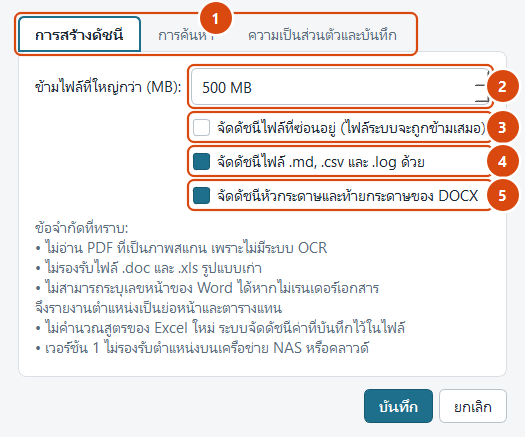
- แถบแท็บทั้งสาม การสร้างดัชนี · การค้นหา · ความเป็นส่วนตัวและบันทึก
- ข้ามไฟล์ที่ใหญ่กว่า (เมกะไบต์) ค่าโดยปริยายคือ 500 เมกะไบต์ แฟ้มที่ใหญ่กว่านี้จะถูกข้าม เพื่อมิให้การจัดทำดัชนีใช้เวลานานผิดปกติ ปรับได้สูงสุด 4,096 เมกะไบต์
- จัดดัชนีไฟล์ที่ซ่อนอยู่ ปิดไว้โดยปริยาย เมื่อเปิดใช้งาน แฟ้มที่ตั้งคุณสมบัติซ่อนไว้จะถูกอ่านด้วย ทั้งนี้ แฟ้มระบบจะถูกข้ามเสมอไม่ว่าตั้งค่าอย่างไร
- จัดดัชนีไฟล์ .md, .csv และ .log ด้วย
เปิดรับชนิดแฟ้มข้อความเพิ่มเติมนอกเหนือจาก
.txtเมื่อเปลี่ยนค่านี้ต้องสร้างดัชนีใหม่จึงจะเห็นผล - จัดดัชนีหัวกระดาษและท้ายกระดาษของ DOCX เปิดไว้โดยปริยาย เนื่องจากเลขที่หนังสือและชื่อหน่วยงานในเอกสารราชการไทย มักปรากฏอยู่ในส่วนหัวกระดาษหรือท้ายกระดาษ
5.3.2 แท็บ “การค้นหา”
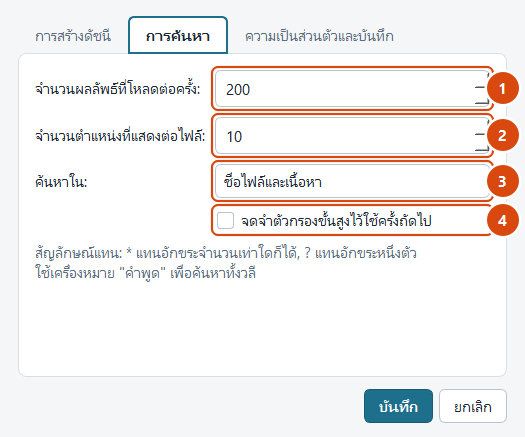
- จำนวนผลลัพธ์ที่โหลดต่อครั้ง กำหนดจำนวนแฟ้มสูงสุดที่แสดงต่อการค้นหาหนึ่งครั้ง ค่าโดยปริยายคือ 200 แฟ้ม การตั้งค่าสูงเกินไปทำให้ตารางแสดงผลช้าลงโดยไม่จำเป็น
- จำนวนตำแหน่งที่แสดงต่อไฟล์ กำหนดจำนวนตำแหน่งที่พบซึ่งจะแสดงเมื่อกางแถวย่อยของแต่ละแฟ้ม ค่าโดยปริยายคือ 10 ตำแหน่ง
- ค้นหาใน (ขอบเขตโดยปริยาย) กำหนดว่าเมื่อเปิดโปรแกรมขึ้นใหม่ ให้เริ่มต้นด้วยการค้นชื่อแฟ้ม เนื้อหา หรือทั้งสองอย่าง
- จดจำตัวกรองขั้นสูงไว้ใช้ครั้งถัดไป เมื่อเปิดใช้งาน โปรแกรมจะจดจำค่าตัวกรองที่ผู้ใช้ตั้งไว้ แล้วนำกลับมาใช้อีกในการเปิดโปรแกรมครั้งถัดไป เหมาะกับผู้ที่ใช้เงื่อนไขเดิมเป็นประจำ
5.3.3 แท็บ “ความเป็นส่วนตัวและบันทึก”
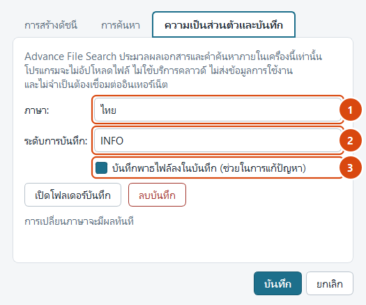
- ภาษาของหน้าจอ เลือกได้ระหว่างภาษาไทยและภาษาอังกฤษ การเปลี่ยนภาษามีผลกับข้อความทุกส่วนของโปรแกรม
- ระดับของบันทึกการทำงาน กำหนดความละเอียดของบันทึก ตั้งแต่ระดับที่บันทึกเฉพาะข้อผิดพลาด ไปจนถึงระดับที่บันทึกรายละเอียดสำหรับการตรวจสอบปัญหา
- บันทึกพาธไฟล์ลงในบันทึก เปิดไว้โดยปริยาย เพื่อช่วยในการตรวจสอบปัญหาที่เกิดกับแฟ้มใดแฟ้มหนึ่ง หากหน่วยงานมีข้อกำหนดที่เข้มงวดเป็นพิเศษ ให้ปิดตัวเลือกนี้ บันทึกการทำงานจะไม่มีชื่อแฟ้มหรือเส้นทางของเอกสารปรากฏอยู่เลย ทั้งนี้ ไม่ว่าจะตั้งค่าอย่างไร บันทึกการทำงานจะไม่มีเนื้อหาของเอกสารและไม่มีคำค้นของผู้ใช้
แท็บนี้ยังมีปุ่ม เปิดโฟลเดอร์บันทึก สำหรับเปิดตำแหน่งที่เก็บบันทึกการทำงาน และปุ่ม ลบบันทึก สำหรับลบบันทึกทั้งหมดทิ้ง ซึ่งไม่กระทบต่อดัชนีค้นหาและเอกสารของผู้ใช้แต่อย่างใด
5.4 แผงตัวกรองขั้นสูง
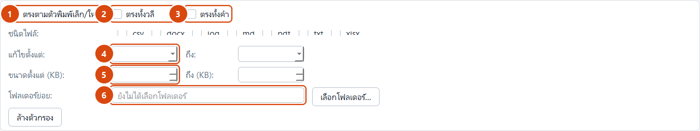
- ตรงตัวพิมพ์เล็ก–ใหญ่
เมื่อเปิดใช้งาน คำว่า
Budgetจะไม่ตรงกับbudgetมีผลกับภาษาอังกฤษเป็นหลัก - วลีตรงทั้งหมด กำหนดให้ทุกคำต้องเรียงติดกันตามลำดับที่พิมพ์ ให้ผลเช่นเดียวกับการใส่เครื่องหมายอัญประกาศ
- ทั้งคำ
ค้นคำว่า
budgetจะไม่ตรงกับprebudgetingมีประโยชน์มากเมื่อค้นคำภาษาอังกฤษที่สั้น - ช่วงวันที่แก้ไข จำกัดผลลัพธ์เฉพาะแฟ้มที่แก้ไขภายในช่วงเวลาที่กำหนด หากไม่กำหนดจะเว้นว่างไว้ มิได้แสดงวันที่สมมุติแต่อย่างใด
- ช่วงขนาดของแฟ้มกำหนดขนาดต่ำสุดและสูงสุดเป็นกิโลไบต์
- โฟลเดอร์ย่อย
จำกัดผลลัพธ์ให้อยู่ภายใต้โฟลเดอร์ย่อยที่ระบุเท่านั้น เช่น
งบประมาณ\2568
นอกจากนี้ยังมีตัวกรองชนิดของแฟ้ม สำหรับเลือกค้นเฉพาะ PDF, DOCX, XLSX หรือ TXT ตัวกรองทั้งหมดทำงานร่วมกันในลักษณะ “และ” กล่าวคือ ผลลัพธ์ต้องเป็นไปตามทุกเงื่อนไขที่เปิดใช้งาน
5.5 กล่องเกี่ยวกับโปรแกรม
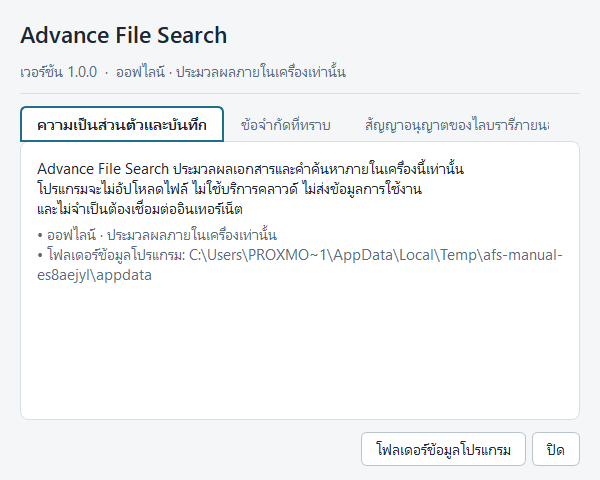
เข้าถึงได้จากเมนู สถานะดัชนี → เกี่ยวกับโปรแกรม ประกอบด้วยสามแท็บ ได้แก่
- ความเป็นส่วนตัวและบันทึก — คำแถลงว่าโปรแกรมประมวลผลเอกสารและคำค้นภายในเครื่องเท่านั้น พร้อมแสดงตำแหน่งโฟลเดอร์ข้อมูลของโปรแกรม
- ข้อจำกัดที่ทราบ — ข้อจำกัดตามที่ระบุไว้ในหัวข้อที่ 9 ของคู่มือฉบับนี้
- สัญญาอนุญาตของไลบรารีภายนอก — รายการซอฟต์แวร์ที่นำมาใช้ประกอบและสัญญาอนุญาตของแต่ละรายการ
6 ฟังก์ชันการทำงาน
6.1 การค้นหาชื่อแฟ้มและเนื้อหาเอกสาร
ฟังก์ชันหลักของโปรแกรม ผู้ใช้พิมพ์คำค้นแล้วเลือกขอบเขตได้สามลักษณะ ดังนี้
| ขอบเขต | ค้นจากอะไร | เหมาะกับกรณีใด |
|---|---|---|
| ชื่อไฟล์และเนื้อหา | ทั้งชื่อแฟ้มและข้อความภายในเอกสาร | ใช้เป็นค่าโดยปริยาย เหมาะกับการค้นหาทั่วไป |
| ชื่อไฟล์เท่านั้น | ชื่อแฟ้มและเส้นทางย่อย | เมื่อจำชื่อแฟ้มได้ และต้องการผลลัพธ์ที่กระชับและเร็วที่สุด |
| เนื้อหาเท่านั้น | ข้อความภายในเอกสาร | เมื่อจำได้เพียงข้อความภายใน และไม่ต้องการให้ชื่อแฟ้มมารบกวนผลลัพธ์ |
6.2 การค้นหาภาษาไทย
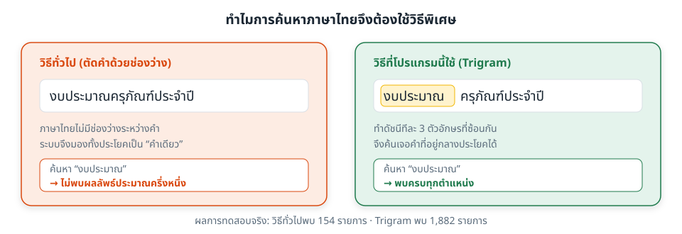
ภาษาไทยไม่มีการเว้นวรรคระหว่างคำ ระบบค้นหาทั่วไปจึงมักไม่พบคำที่อยู่กลางข้อความ โปรแกรมนี้ใช้วิธีจัดทำดัชนีแบบ สามอักขระต่อเนื่อง (trigram) ซึ่งทำให้ค้นหาข้อความย่อยได้ทุกตำแหน่ง ไม่ว่าคำนั้นจะอยู่ต้น กลาง หรือท้ายข้อความ
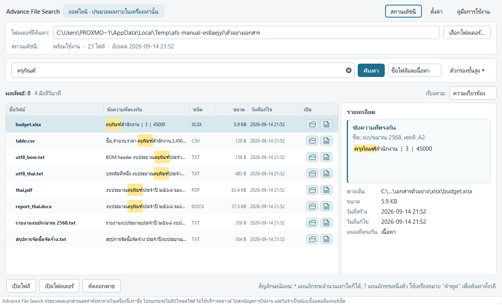
ทั้งนี้ โปรแกรมแยกเลขไทย (๒๕๖๘) กับเลขอารบิก (2568) ออกจากกัน หากไม่แน่ใจว่าเอกสารใช้เลขแบบใด ควรทดลองค้นทั้งสองแบบ
6.3 การใช้สัญลักษณ์แทนและการค้นทั้งวลี
| รูปแบบที่พิมพ์ | ความหมาย | ตัวอย่างผลลัพธ์ |
|---|---|---|
งบประมาณ | ค้นคำนี้ในทุกตำแหน่งของข้อความ | พบทั้งที่อยู่ต้นและกลางข้อความ |
"งบประมาณครุภัณฑ์" | ค้นทั้งวลี โดยคำต้องเรียงติดกัน | ไม่พบเอกสารที่มีสองคำนี้อยู่คนละที่ |
bud*et | * แทนอักขระจำนวนเท่าใดก็ได้ | พบ budget และ budgeting set |
need?e | ? แทนอักขระหนึ่งตัวพอดี | พบ needle แต่ไม่พบ needdle |
รายงาน 2568 | หลายคำ โดยไม่ต้องเรียงติดกัน | พบเอกสารที่มีทั้งสองคำ แม้อยู่คนละบรรทัด |
6.4 การแสดงตำแหน่งที่พบภายในเอกสาร
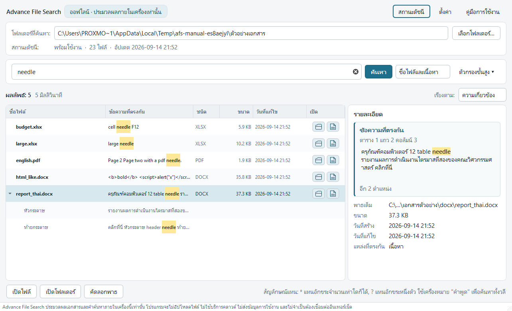
เมื่อกดลูกศรหน้าแถวผลลัพธ์ โปรแกรมจะแสดงทุกตำแหน่งที่พบคำค้นภายในแฟ้มนั้น พร้อมข้อความโดยรอบ ผู้ใช้จึงตัดสินใจได้ว่าจะเปิดเอกสารฉบับใด และเมื่อเปิดแล้วควรไปที่หน้าใดหรือย่อหน้าใด การดับเบิลคลิกที่ตำแหน่งใดก็ตามจะเป็นการเปิดเอกสารฉบับนั้น
6.5 การเปิดเอกสารและการเปิดโฟลเดอร์
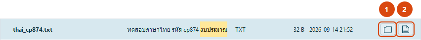
- ปุ่มเปิดโฟลเดอร์ ปุ่มสัญลักษณ์รูปโฟลเดอร์ ขนาด 30 × 24 จุด เมื่อเลือกจะเปิด File Explorer ไปยังโฟลเดอร์ของแฟ้มนั้นพร้อมเลือกแฟ้มไว้ให้ รองรับชื่อโฟลเดอร์ภาษาไทยที่มีการเว้นวรรคได้อย่างถูกต้อง
- ปุ่มเปิดไฟล์
ปุ่มสัญลักษณ์รูปเอกสาร เมื่อเลือกจะเปิดแฟ้มนั้นด้วยโปรแกรมที่ระบบกำหนดไว้ทันที
โดยไม่ต้องเลือกแถวแล้วกดปุ่มที่แถบด้านล่าง
หากเครื่องยังไม่มีโปรแกรมสำหรับแฟ้มชนิดนั้น เช่น ไม่มี Microsoft Word สำหรับแฟ้ม
.docxระบบจะเปิดหน้าต่าง “เปิดด้วย” (Open with) ของ Windows ให้ผู้ใช้เลือกโปรแกรมเอง แทนที่จะแจ้งว่าเปิดไม่ได้
ทั้งสองปุ่มไม่ทำงานกับแถวย่อยซึ่งเป็นตำแหน่งที่พบ และไม่ทำงานกับแฟ้มที่ถูกลบไปแล้ว เนื่องจากเป็นสัญลักษณ์ล้วน จึงมีคำอธิบายปรากฏเมื่อนำตัวชี้ไปวางค้างไว้
นอกจากปุ่มประจำแถวแล้ว ยังใช้ปุ่มที่แถบคำสั่งด้านล่างได้เช่นกัน (หัวข้อ 4.4) โดยโปรแกรมเพียงส่งคำสั่งให้ระบบปฏิบัติการเป็นผู้เปิดแฟ้ม มิได้เปิดหรือประมวลผลเอกสารด้วยตนเอง และไม่มีการเรียกใช้มาโครในเอกสารไม่ว่ากรณีใด
6.6 การจัดทำและปรับปรุงดัชนี
ดัชนีคือสำเนาข้อความที่สกัดจากเอกสาร จัดเก็บในรูปแบบที่ค้นหาได้รวดเร็ว โปรแกรมจัดการดัชนีให้โดยอัตโนมัติเป็นหลัก ผู้ใช้จึงไม่จำเป็นต้องสั่งเอง
| สถานการณ์ | สิ่งที่โปรแกรมดำเนินการเมื่อกดค้นหา |
|---|---|
| ยังไม่เคยจัดทำดัชนีของโฟลเดอร์นี้ | จัดทำดัชนีให้ทันที พร้อมแสดงกล่องความคืบหน้า แล้วจึงค้นหาต่อให้เอง |
| มีดัชนีอยู่แล้ว | แสดงผลจากดัชนีทันที แล้วตรวจหาแฟ้มที่เปลี่ยนแปลงในเบื้องหลังโดยไม่รบกวนการใช้งาน |
| เพิ่งค้นหาไปเมื่อครู่ | ไม่ตรวจซ้ำ เนื่องจากมีการหน่วงเวลาไว้ เพื่อมิให้สำรวจแฟ้มซ้ำโดยไม่จำเป็น |
| ผู้ใช้เพียงพิมพ์คำค้น ยังไม่กดค้นหา | ไม่มีการจัดทำดัชนีใด ๆ เกิดขึ้น |
การปรับปรุงดัชนีอาศัย ลายนิ้วมือของแฟ้ม ซึ่งประกอบด้วยขนาดของแฟ้ม เวลาที่แก้ไขล่าสุด และรุ่นของตัวอ่านเอกสาร แฟ้มที่ลายนิ้วมือไม่เปลี่ยนจะถูกข้ามไป การปรับปรุงจึงใช้เวลาน้อยมากเมื่อเทียบกับการจัดทำครั้งแรก
6.7 การจัดลำดับและการเรียงผลลัพธ์
โดยปริยาย โปรแกรมเรียงผลลัพธ์ตาม ความเกี่ยวข้อง ซึ่งพิจารณาจาก การตรงที่ชื่อแฟ้มซึ่งมีน้ำหนักมากกว่าการตรงที่เนื้อหา จำนวนครั้งที่พบภายในแฟ้มเดียวกัน และความใหม่ของแฟ้มเป็นเกณฑ์ตัดสินเมื่อคะแนนเท่ากัน ผู้ใช้เปลี่ยนไปเรียงตามชื่อแฟ้ม ขนาด วันที่แก้ไข วันที่สร้าง หรือชนิดของแฟ้มได้ตลอดเวลา
6.8 ปุ่มลัดบนแป้นพิมพ์
| ปุ่มลัด | หน้าที่ |
|---|---|
| Ctrl + F | ย้ายเคอร์เซอร์ไปที่ช่องค้นหา |
| Enter ในช่องค้นหา | เริ่มการค้นหา |
| Enter ในตารางผลลัพธ์ | เปิดเอกสารที่เลือก |
| Ctrl + Shift + E | เปิดโฟลเดอร์ของแฟ้มที่เลือก |
| Ctrl + Shift + C | คัดลอกเส้นทางเต็มของแฟ้มที่เลือก |
| Ctrl + Shift + F | กางหรือพับแผงตัวกรองขั้นสูง |
| F5 | ปรับปรุงดัชนี |
7 ขั้นตอนการใช้งานทีละขั้น
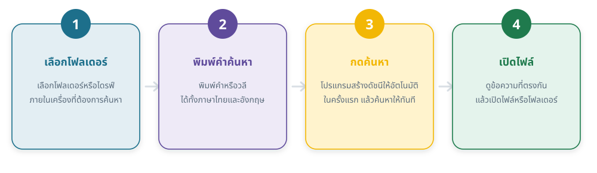
7.1 การใช้งานครั้งแรกตั้งแต่ต้นจนจบ
- เปิดโปรแกรม
ดับเบิลคลิกที่แฟ้ม
AdvanceFileSearch.exeในโฟลเดอร์โปรแกรม หน้าจอต้อนรับจะปรากฏขึ้นพร้อมคำแนะนำสามขั้นตอน - เลือกโฟลเดอร์ที่ต้องการค้นหา
เลือกปุ่ม เลือกโฟลเดอร์… (หมายเลข 2 ในภาพที่ 9)
แล้วเลือกโฟลเดอร์หรือไดรฟ์ภายในเครื่อง เช่น
D:\เอกสารราชการ
ควรเลือกโฟลเดอร์ที่ครอบคลุมเอกสารที่ต้องการค้นจริง การเลือกทั้งไดรฟ์ทำให้การจัดทำดัชนีครั้งแรกใช้เวลานานโดยไม่จำเป็น - พิมพ์คำค้นแล้วกดปุ่มค้นหา
พิมพ์คำที่ต้องการลงในช่องค้นหา (หมายเลข 1 ในภาพที่ 10)
แล้วกดปุ่ม ค้นหา หรือกดแป้น Enter
ในการใช้งานครั้งแรก โปรแกรมจะจัดทำดัชนีให้ก่อนโดยอัตโนมัติ โดยแสดงกล่องความคืบหน้าตามภาพที่ 14 ระหว่างนี้สามารถกดยกเลิกได้ตลอดเวลา - ตรวจดูผลลัพธ์ เมื่อจัดทำดัชนีเสร็จ โปรแกรมจะค้นหาต่อให้เองและแสดงผลในตาราง เลือกแถวใดแถวหนึ่งเพื่อดูข้อความที่ตรงกันทางด้านขวา หรือกดลูกศรหน้าแถวเพื่อดูทุกตำแหน่งที่พบภายในแฟ้มนั้น
- เปิดเอกสารหรือเปิดโฟลเดอร์ เมื่อพบเอกสารที่ต้องการ เลือกปุ่ม เปิดไฟล์ เพื่อเปิดเอกสาร หรือเลือกปุ่มสัญลักษณ์โฟลเดอร์ในคอลัมน์สุดท้ายเพื่อเปิดตำแหน่งที่จัดเก็บ
- ค้นหาครั้งต่อไป พิมพ์คำค้นใหม่แล้วกดค้นหาได้ทันที ไม่ต้องจัดทำดัชนีซ้ำ โปรแกรมจะตรวจหาแฟ้มที่เปลี่ยนแปลงให้เองในเบื้องหลัง
7.2 การใช้งานตัวกรองขั้นสูงทีละขั้น
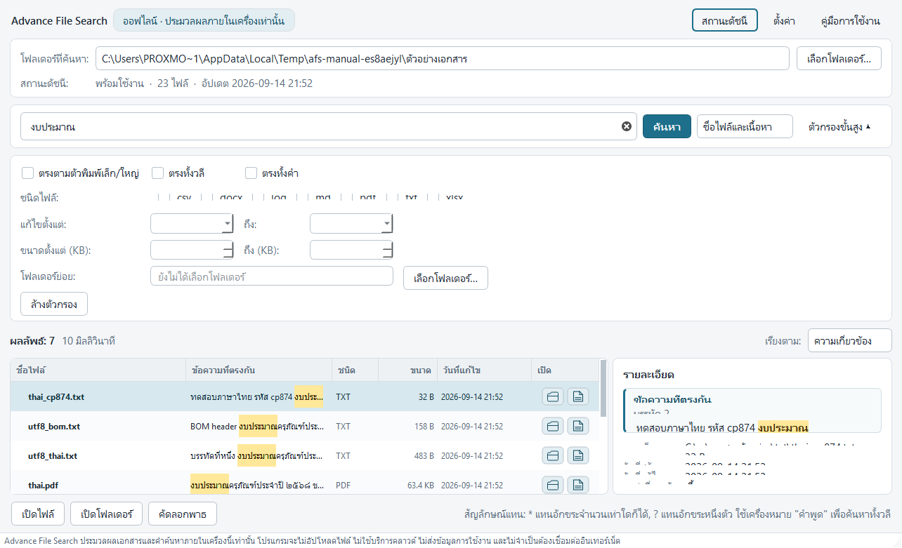
- กางแผงตัวกรอง เลือก ตัวกรองขั้นสูง (หมายเลข 4 ในภาพที่ 10) หรือกด Ctrl + Shift + F
- กำหนดเงื่อนไขที่ต้องการ
เช่น เลือกเฉพาะชนิด PDF กำหนดช่วงวันที่แก้ไขเป็นปีปัจจุบัน
และระบุโฟลเดอร์ย่อยเป็น
งบประมาณ - กดค้นหาอีกครั้ง ผลลัพธ์จะถูกจำกัดตามเงื่อนไขทั้งหมดที่เปิดใช้งานพร้อมกัน
- ล้างเงื่อนไขเมื่อไม่ต้องการแล้ว ตัวกรองที่ยังเปิดค้างไว้จะมีผลกับการค้นหาครั้งถัดไปด้วย หากผลลัพธ์น้อยผิดปกติ ให้ตรวจสอบว่ามีตัวกรองค้างอยู่หรือไม่
7.3 การปรับปรุงดัชนีเมื่อเอกสารเปลี่ยนแปลง
- ตรวจสอบแถบสถานะดัชนี ดูจำนวนแฟ้มและเวลาที่ปรับปรุงล่าสุด (หมายเลข 3 ในภาพที่ 9)
- เลือกคำสั่งอัปเดตดัชนี จากเมนู สถานะดัชนี → อัปเดตดัชนี หรือกดแป้น F5 โปรแกรมจะปรับปรุงเฉพาะแฟ้มที่เพิ่มขึ้น เปลี่ยนแปลง หรือถูกลบ
- ใช้คำสั่งสร้างดัชนีใหม่ทั้งหมดเมื่อจำเป็น ในกรณีที่ผลการค้นหาไม่สอดคล้องกับเอกสารจริง หรือหลังจากเปลี่ยนค่าตั้งที่มีผลต่อสิ่งที่ถูกอ่านเข้าดัชนี
7.4 การเปลี่ยนภาษาของหน้าจอ
- เปิดกล่องตั้งค่า เลือกปุ่ม ตั้งค่า (หมายเลข 5 ในภาพที่ 9)
- ไปที่แท็บความเป็นส่วนตัวและบันทึก แล้วเลือกภาษาที่ต้องการจากรายการ
- เลือกปุ่มบันทึก ข้อความบนหน้าจอจะเปลี่ยนเป็นภาษาที่เลือกทันที โดยไม่ต้องเปิดโปรแกรมใหม่ และไม่กระทบต่อดัชนีที่จัดทำไว้แล้ว
8 ขอบเขตของระบบ
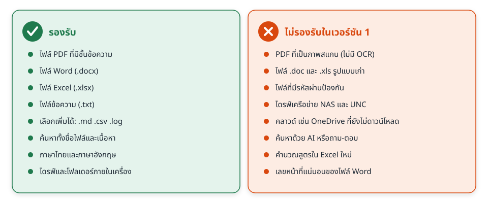
8.1 สิ่งที่ระบบทำได้
- จัดทำดัชนีและค้นหาเอกสารประเภท PDF, DOCX, XLSX และ TXT
(เพิ่ม
.md,.csvและ.logได้จากหน้าตั้งค่า) - ค้นหาได้ทั้งภาษาไทยและภาษาอังกฤษ ทั้งในชื่อแฟ้ม ชื่อโฟลเดอร์ และเนื้อหาเอกสาร
- รายงานตำแหน่งที่พบอย่างเจาะจงตามชนิดของเอกสาร
- ปรับปรุงดัชนีเฉพาะส่วนที่เปลี่ยนแปลง รวมถึงตรวจพบแฟ้มที่ถูกเพิ่ม แก้ไข ลบ และเปลี่ยนชื่อ
- กรองผลลัพธ์ตามชนิด ช่วงวันที่ ช่วงขนาด และโฟลเดอร์ย่อย
- เปิดเอกสาร เปิดโฟลเดอร์ และคัดลอกเส้นทางของแฟ้ม
- ทำงานได้ตามปกติขณะไม่ได้เชื่อมต่อเครือข่าย
- แสดงผลได้สองภาษา คือ ภาษาไทยและภาษาอังกฤษ
8.2 สิ่งที่อยู่นอกขอบเขต
- ไม่แปลงเอกสาร ไม่แก้ไขเอกสาร และไม่ย้ายหรือลบเอกสารของผู้ใช้
- ไม่รองรับตำแหน่งจัดเก็บบนเครือข่าย ไดรฟ์ที่เชื่อมจากเครือข่าย และบริการคลาวด์
- ไม่มีระบบผู้ใช้ ไม่มีการกำหนดรหัสผ่าน และไม่มีการแบ่งสิทธิ์การเข้าถึง เนื่องจากโปรแกรมทำงานภายใต้บัญชีผู้ใช้ของ Windows และเข้าถึงได้เฉพาะเอกสารที่บัญชีนั้นมีสิทธิ์อยู่แล้ว
- ไม่มีการรับส่งข้อมูลกับระบบภายนอกทุกรูปแบบ
9 ข้อกำหนดและข้อจำกัด
ข้อจำกัดต่อไปนี้เป็นผลจากการออกแบบโดยเจตนา มิใช่ข้อบกพร่องของโปรแกรม และปรากฏอยู่ในกล่อง เกี่ยวกับโปรแกรม ภายในตัวโปรแกรมด้วยเช่นกัน
ไม่มีการรู้จำอักขระจากภาพ (OCR)
เอกสาร PDF ที่ได้จากการสแกนเป็นภาพจะไม่มีข้อความให้ค้นหา โปรแกรมจะรายงานว่า “ไม่พบข้อความที่ค้นหาได้” ซึ่งเป็นผลลัพธ์ตามปกติ
ไม่รองรับ .doc และ .xls รูปแบบเดิม
เอกสารรูปแบบก่อน Microsoft Office 2007 ต้องบันทึกใหม่เป็น
.docx หรือ .xlsx ก่อนจึงจะค้นเนื้อหาได้
เอกสาร Word ไม่มีเลขหน้า
เลขหน้าของเอกสาร Word เกิดขึ้นขณะจัดหน้าเพื่อแสดงผล มิได้บันทึกไว้ในแฟ้ม โปรแกรมจึงรายงานเป็นลำดับย่อหน้าหรือตำแหน่งในตารางแทน
ไม่คำนวณสูตรของ Excel ใหม่
โปรแกรมอ่านค่าที่บันทึกไว้ในแฟ้ม หากสูตรใดไม่เคยถูกคำนวณและบันทึกผลไว้ ค่าดังกล่าวจะไม่ปรากฏในดัชนี
การค้นเป็นแบบข้อความย่อย
ผลจากวิธี trigram ทำให้คำว่า budget ตรงกับ
prebudgeting ด้วย หากไม่ประสงค์เช่นนั้น ให้ใช้ตัวเลือก
ทั้งคำ ในแผงตัวกรองขั้นสูง
ไม่รองรับเอกสารที่กำหนดรหัสผ่าน
เอกสารที่ถูกเข้ารหัสจะถูกรายงานว่า “แฟ้มถูกกำหนดรหัสผ่าน” และไม่ถูกจัดทำดัชนี โปรแกรมไม่พยายามเปิดรหัสไม่ว่ากรณีใด
9.1 ข้อกำหนดในการใช้งาน
- ผู้ใช้ต้องมีสิทธิ์อ่านเอกสารในโฟลเดอร์ที่กำหนดให้จัดทำดัชนี
- ต้องมีพื้นที่ว่างเพียงพอสำหรับจัดเก็บดัชนี โดยประมาณคิดเป็นร้อยละ 30–60 ของปริมาณข้อความที่สกัดได้จากเอกสาร
- ขณะจัดทำดัชนีครั้งแรก ไม่ควรปิดโปรแกรมด้วยวิธีบังคับปิด ควรใช้ปุ่มยกเลิกเพื่อให้ระบบปิดงานอย่างเรียบร้อย
- เปิดโปรแกรมได้ครั้งละหนึ่งหน้าต่างต่อหนึ่งบัญชีผู้ใช้ เพื่อป้องกันการเขียนดัชนีพร้อมกันจากสองกระบวนการ
10 ปัญหาและวิธีแก้ไขเบื้องต้น
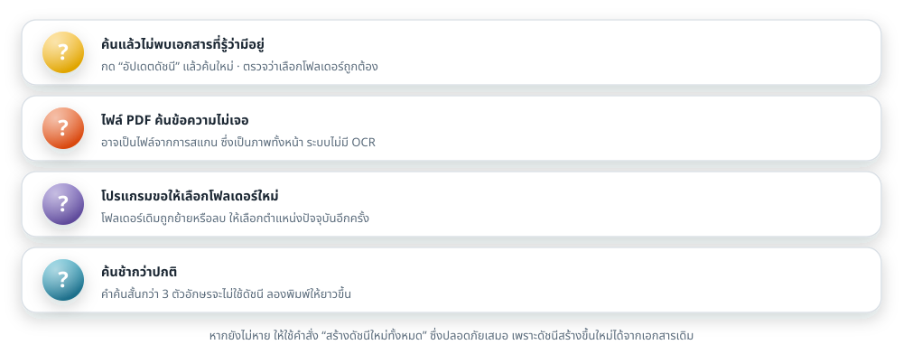
ค้นหาแล้วไม่พบเอกสารที่ทราบว่ามีอยู่จริง
ประการแรก ให้ตรวจสอบว่าเลือกโฟลเดอร์ถูกต้องหรือไม่ (หมายเลข 1 ในภาพที่ 9) ประการที่สอง ให้เลือกเมนู สถานะดัชนี → อัปเดตดัชนี แล้วค้นหาอีกครั้ง เนื่องจากเอกสารที่เพิ่งเพิ่มเข้ามาอาจยังไม่อยู่ในดัชนี ประการที่สาม ให้ตรวจสอบว่ามีตัวกรองขั้นสูงค้างอยู่หรือไม่ และประการสุดท้าย หากเอกสารเป็น PDF จากการสแกน จะไม่มีข้อความให้ค้นหา
ค้นหาแล้วได้ผลลัพธ์มากเกินไป
ให้ใช้เครื่องหมายอัญประกาศเพื่อค้นทั้งวลี เช่น "งบประมาณครุภัณฑ์"
หรือเปิดตัวเลือก ทั้งคำ ในแผงตัวกรองขั้นสูง
และอาจจำกัดชนิดของแฟ้มหรือช่วงวันที่แก้ไขเพิ่มเติม
โปรแกรมแจ้งว่าไม่รองรับตำแหน่งที่เลือก
โปรแกรมรุ่นนี้รองรับเฉพาะโฟลเดอร์และไดรฟ์ภายในเครื่อง
ตำแหน่งแบบ \\ชื่อเครื่อง\โฟลเดอร์ ไดรฟ์ที่เชื่อมมาจากเครือข่าย
และแฟ้มบนคลาวด์ที่ยังไม่ได้ดาวน์โหลดลงเครื่อง จะไม่สามารถเลือกได้
แนวทางแก้ไขคือคัดลอกเอกสารมาไว้ในเครื่องก่อน แล้วจึงจัดทำดัชนี
การจัดทำดัชนีใช้เวลานาน
ระยะเวลาขึ้นอยู่กับจำนวนและขนาดของเอกสาร โดยเฉพาะเอกสาร PDF ที่มีจำนวนหน้ามาก แนวทางแก้ไขคือเลือกโฟลเดอร์ให้แคบลง หรือกำหนดค่า ข้ามไฟล์ที่ใหญ่กว่า ในหน้าตั้งค่าให้เหมาะสม ทั้งนี้ การจัดทำครั้งแรกเท่านั้นที่ใช้เวลานาน ครั้งต่อไปจะเร็วขึ้นมาก
ผลลัพธ์แสดงแฟ้มที่ถูกลบไปแล้ว
แฟ้มที่ไม่พบแล้วจะแสดงด้วยเส้นขีดฆ่า และปุ่มเปิดแฟ้มจะถูกปิดการใช้งาน ให้เลือกเมนู สถานะดัชนี → อัปเดตดัชนี เพื่อให้โปรแกรมนำรายการดังกล่าวออกจากดัชนี
เปิดโปรแกรมแล้วไม่ปรากฏหน้าต่างใหม่
โปรแกรมอนุญาตให้เปิดได้ครั้งละหนึ่งหน้าต่างเท่านั้น หากเปิดซ้ำ ระบบจะนำหน้าต่างเดิมขึ้นมาแสดงแทนการเปิดหน้าต่างใหม่ ให้ตรวจสอบที่แถบงานว่ามีหน้าต่างของโปรแกรมเปิดอยู่แล้วหรือไม่
กดปุ่มเปิดไฟล์แล้ว Windows ถามว่าจะเปิดด้วยโปรแกรมใด
เกิดขึ้นเมื่อเครื่องยังไม่มีโปรแกรมที่ตั้งไว้สำหรับแฟ้มชนิดนั้น
เช่น เปิดแฟ้ม .docx บนเครื่องที่ไม่ได้ติดตั้ง Microsoft Word
ให้เลือกโปรแกรมที่ต้องการจากรายการ และหากต้องการให้ใช้โปรแกรมนั้นทุกครั้ง
ให้ทำเครื่องหมายที่ตัวเลือก “ใช้แอปนี้เสมอ” ก่อนกดตกลง
กรณีที่ไม่มีโปรแกรมใดเลย ให้ติดตั้งโปรแกรมสำหรับเปิดแฟ้มชนิดนั้นก่อน
ต้องการเริ่มต้นใหม่ทั้งหมด
ให้เลือกเมนู สถานะดัชนี → ลบดัชนี แล้วค้นหาใหม่อีกครั้ง โปรแกรมจะจัดทำดัชนีขึ้นใหม่ให้เอง การดำเนินการนี้ปลอดภัยเสมอ เนื่องจากดัชนีสร้างขึ้นใหม่ได้จากเอกสารต้นฉบับ และไม่กระทบต่อเอกสารของผู้ใช้
ต้องการส่งข้อมูลให้ผู้ดูแลระบบตรวจสอบปัญหา
ให้เลือกเมนู สถานะดัชนี → เปิดโฟลเดอร์ข้อมูลโปรแกรม
แล้วส่งแฟ้มบันทึกการทำงานในโฟลเดอร์ logs ให้ผู้ดูแลระบบ
บันทึกดังกล่าวไม่มีเนื้อหาของเอกสารและไม่มีคำค้นของผู้ใช้
หากไม่ประสงค์ให้มีเส้นทางแฟ้มปรากฏอยู่ด้วย สามารถปิดตัวเลือกได้ที่หน้าตั้งค่า
_internal ภายในโฟลเดอร์โปรแกรม
และไม่ควรแก้ไขแฟ้มฐานข้อมูล index.db ด้วยโปรแกรมอื่น
หากต้องการล้างข้อมูล ให้ใช้คำสั่ง ลบดัชนี ภายในโปรแกรมแทน